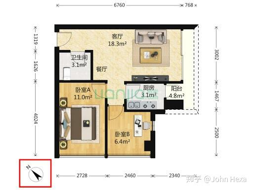

时间: 00:00:00
标准答案 1:
1.总体布局为将右下角去除后再将第二行高度压扁到三分之一的正九宫格。
2.第二行横向均分为六段。最右段再去除其右半部分，最左段上下均分，分别并入左上、左下宫格，其余互相打通成为走廊。
3.中上宫格横向中分为左右两格，分别称为A、B。
4.右移B的右墙直到B扩大一倍（右上宫格会变窄），再将B向上扩大1/5，然后上下分割为“B上”，“B下”两格。B上比B下小1/5。
5.约定门/窗宽度如为所在墙的一半，则称为“半门/窗”，如为3/4，则为“3/4门/窗”，如等长，则为“全门/窗”。门、窗默认在所在墙居中设置。
6.顶侧所有墙开半窗，其中A格顶窗左移半个身位。
7.左下宫格下侧墙开2/3飘窗，飘窗向下探出深度为其宽度的1/4，并向下开全窗。
8.B2、下中两格与走廊之间隔挡去除。
9.左上、右上、左下格分别向走廊上下侧开3/4门。A格向下开1/2门，并左移半个身位。
10.中下格向下扩展1/3，扩展格先去掉其左侧1/16，再向上开3/5门、向下开等大窗。
11.走廊右端开4/5门。